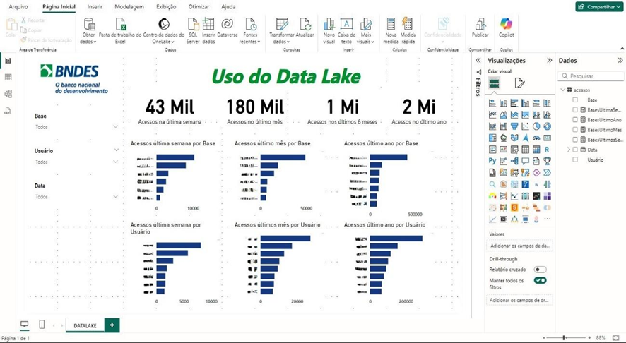

Criação do meu website pessoal https://millarhara.github.io feito na aula de Desenvolvimento de Interface usando HTML e CSS contendo minha página principal, currículo, portfólio e página de contato com um formulário de contato.
Tive a oportunidade de desenvolver meu TCC no BNDES, em um projeto com ênfase em análise de informações gerenciais para monitoramento do acesso às bases do Data Lake, utilizando um dashboard no Power BI. O objetivo era apresentar todas as bases, os usuários que as acessaram e o volume de dados de cada uma durante um período. O trabalho contemplou todas as etapas do ciclo de vida dos dados: desde o tratamento inicial, passando pela construção de consultas SQL, até a criação de relatórios e dashboards no Power BI, sempre com foco em gerar informações relevantes para tomada de decisão e acompanhamento de processos.
